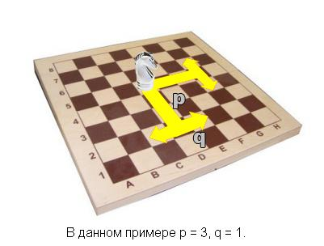

| Ограничение времени: | 1 с |
| Ограничение памяти: | 64 M |
(20 баллов)
На вход поступают 2 числа от 0 до 100, разделённые пробелом. Выведите их сумму.
| Входные данные | Результат работы |
2 3 | 5 |
| Ограничение времени: | 1 с |
| Ограничение памяти: | 64 M |
(130 баллов)
В Вестеросе неспокойно. После смерти законного короля Роберта, беснующиеся орды под предводительством самозванцев делят власть и богатства Семи Королевств. Устав от кровопролитных сражений и поднакопив деньжат, лорд Джон Сноу решил отправиться за Узкое Море и оставить свои деньги на сбережение в самом надежном месте – банке Браавоса. Но вот незадача – из-за разрухи в Вестеросе, его золотые драконы теряют a процентов своей стоимости ежегодно. В банке Браавоса есть два типа депозитов: +b процентов годовых в золотых драконах и беспроцентный – в заморских хонорах, которые не обесцениваются. Помогите Джону определить, что выгоднее: перевести сбережения в хоноры и не получать проценты или оставить золотые драконы, но проценты получить. Вариант считается более выгодным, если с его помощью через год, после начисления всех положенных процентов и затем перевода средств в хоноры, лорд Сноу получит больше денег, чем с помощью другого варианта. Например, если сегодня за один золотой дракон можно купить 10 хоноров и a = 20, то через год за него получится купить лишь 8. Но если при этом b = 50, то через год у нас уже полтора золотого дракона и мы можем купить 8 * 1.5 = 12 хоноров.
Первая строка ввода содержит натуральное число n (1 ≤ n ≤ 10) – количество тестов. Каждая из последующих n строк содержит пару целых чисел a, b (0 ≤ a ≤ 100, 0 ≤ b ≤ 104) – указанные в условии проценты. Для каждого теста в отдельной строке выведите “Valar morghulis”, если выгоднее перевести деньги в хоноры; “Valar dohaeris”, если выгоднее оставить сбережения в золотых драконах; и “You know nothing, John Snow”, если оба варианта принесут одинаковый доход.
| Входные данные | Результат работы |
3 60 100 40 100 50 100 | Valar morghulis Valar dohaeris You know nothing, John Snow |
| Ограничение времени: | 1 с |
| Ограничение памяти: | 64 M |
(150 баллов)
Наступила суровая одесская зима. Для обогрева школы № 666, директор хочет приобрести в каждый из n классов по одному обогревателю. У каждой модели обогревателя есть два целочисленных параметра: мощность – в Ваттах и цена – в долларах (таковы уж реалии одесской зимы). Для каждого класса известна минимальная мощность обогревателя, необходимого для него. Директор хочет узнать два числа – максимальную стоимость подходящего комплекта обогревателей (её он укажет в письме Министерству образования) и минимальную стоимость подходящего комплекта (столько денег он действительно потратит на обогреватели). Можно купить любое количество обогревателей каждой модели.
Первая строка ввода содержит число n (1 ≤ n ≤ 105) – количество классов. Следующая строка содержит n чисел ai (1 ≤ ai ≤ 109) – минимальную мощность обогревателя для i-го класса. Третья строка содержит число m (1 ≤ m ≤ 105) – количество моделей обогревателей. Четвертая строка содержит m чисел wi (1 ≤ wi ≤ 109) – мощности i-ых обогревателей. Пятая строка содержит m чисел pi (1 ≤ pi ≤ 109) – цены i-ых обогревателей. Выведите искомые два числа. Если школу обогреть не удастся, выведите строку “Winter is coming” без кавычек.
Оценивание: Программа, корректно работающая при n, m ≤ 103, оценивается из расчета 50 баллов.
| Входные данные | Результат работы |
3 3 2 5 3 7 3 2 9 4 8 | 27 17 |
| Ограничение времени: | 1 с |
| Ограничение памяти: | 64 M |
(100 баллов)
У Леголаса в колчане n стрел. В первую минуту на него нападает 1 гоблин. Во вторую 1 + 2 = 3 гоблина и так далее. В i-ю минуту на него нападает 1 + 2 + ... + i гоблинов. Каждого гоблина Леголас поражает мгновенно, с первого выстрела. На какой минуте он будет вынужден достать меч из-за отсутствия стрел?
Вам дано число n (0 ≤ n ≤ 104) – количество стрел у Леголаса. Выведите номер минуты, на которой он достанет меч.
| Входные данные | Результат работы |
3 | 2 |
4 | 3 |
| Ограничение времени: | 1 с |
| Ограничение памяти: | 64 M |
(150 баллов)
К Архипу на день рождения пришли m друзей. Он достал из холодильника n пирожных и дал всем друзьям поровну, после чего у него осталось еще k пирожных для себя. Не успел никто притронуться к десерту, как в гости явился еще один друг. Архип спешно забрал назад все пирожные и опять раздал всем друзьям поровну. Ему снова осталось все те же k пирожных. Найдите максимально возможное значение m.
На вход поступают два числа, разделенные пробелом: n и k (1 ≤ k < n ≤ 1018). Выведите требуемое m. Если ситуация, описанная в задаче, невозможна, выведите строку “Imaginary friend” без кавычек.
Оценивание: Программа, корректно работающая при n ≤ 103, оценивается из расчета 50 баллов. Программа, корректно работающая при n ≤ 1012, оценивается из расчета 100 баллов.
| Входные данные | Результат работы |
7 1 | 2 |
7 2 | Imaginary friend |
| Ограничение времени: | 1 с |
| Ограничение памяти: | 64 M |
(150 баллов)
Давным-давно на одной прямоугольной-прямоугольной доске... Ежик из верхней левой клетки торопится на встречу с Медвежонком, которая должна состояться в нижней правой клетке. Чтобы быстрее достичь цели, Ежик оседлал Коня. Конь умеет ходить только определенным образом: переместиться на p клеток вправо и q клеток вверх либо вниз, или переместиться на p клеток вниз и на q клеток влево или вправо (q < p). А еще в каждой клетке находится лужа. Прыгнув на Коне в лужу с координатами (i, j), Ежик получает hij счастья. Он хочет собрать максимальное количество счастья по дороге к Медвежонку. Найдите это число.
Первая строка ввода содержит 4 числа n, m, p и q (1 ≤ n, m, p, q ≤ 200; q < p) – высота, ширина доски и параметры прыжка Коня. Следующие n строк содержат по m чисел hij (0 ≤ hij ≤ 1000) – количество счастья от попадания в клетку с координатами (i, j). Выведите максимальное количество счастья, собранное Ежиком, либо строку “Not today”, если встреча не состоится. Счастье в исходной и конечной клетке также учитывается.
Оценивание: Программа, корректно работающая при n, m ≤ 10, оценивается из расчета 50 баллов.
| Входные данные | Результат работы |
4 4 2 1 1 5 3 2 9 7 0 0 2 5 3 4 1 2 1 7 | 13 |